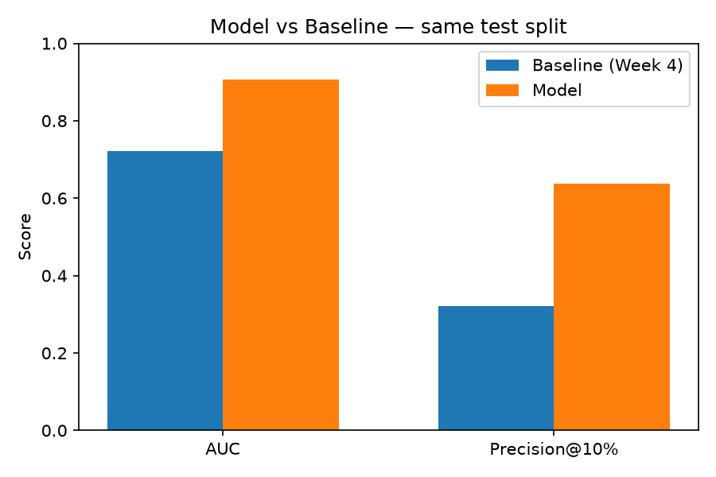
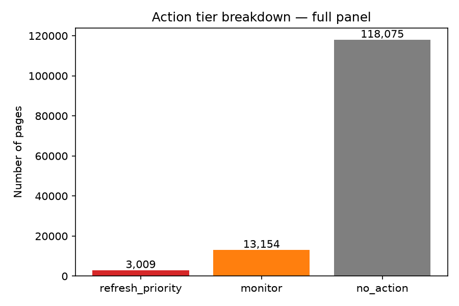

Which published client pages are likely to decline in organic search traffic, and should be prioritized for editorial refresh? Using February 2026 search performance signals to predict March 2026 click decline on FlyRank's anonymized content warehouse, a gradient-boosted classifier was trained and validated against a transparent visibility-based baseline on a client-grouped, zero-overlap test split. The model reached 0.907 AUC and 63.8% Precision@10%, versus 0.721 AUC and 32.1% Precision@10% for the baseline — nearly doubling the hit rate editors would see in the top of a prioritized queue. The output is a ranked action playbook with reason codes, intended to direct limited editorial review time toward the pages most likely to need it.
Decision: which pages get queued for editorial refresh this cycle, versus left alone.
Unit of analysis: one published content page, for one client, aggregated over a month.
Output: a ranked score and a three-tier action label (refresh_priority / monitor / no_action) with a reason code.
Action: an SEO editor reviews flagged pages, updates outdated facts, improves depth, re-optimizes on-page elements.
Cost of a wrong call: a false positive wastes editorial time on a page that didn't need it; a false negative lets real organic traffic loss go unaddressed for another cycle.
Why ML helps: dozens of interacting signals (position, clicks, impressions, staleness) don't reduce to a single hand-written threshold, and their relationships likely differ across content types and clients.
Data source: FlyRank ML Internship warehouse (FlyRank/internship-warehouse), an anonymized release of real search performance data. Table used: fact_content_daily_performance. February 2026 was used for features, March 2026 for the outcome — the dataset's final month (June 2026) was never touched, reserved as a sealed test window.
Deliberately excluded: FlyRank's own product-computed decision fields (health_score, priority_score, action_type) — outputs of an existing rule-based system, never used as inputs. dim_content's update-date field was excluded entirely after testing revealed it reflects each page's current state rather than a true point-in-time snapshot.
All identifiers are salted hash keys, used only for grouping and joins, never as model features. No client names, domains, URLs, or private queries appear anywhere in this repo.
Built in Week 4: stale_but_visible = is_stale × has_visibility × impressions. Verified on real bucket tables: staleness confirmed against click volume (2.92 → 0.98 → 0.10 avg clicks across freshness buckets), CTR-vs-position confirmed against the CTR-fix logic's assumption (1.06% → 0.09% CTR across position buckets).
For this model comparison, the baseline is represented by its visibility component alone — ranking by raw February impressions — scored on the identical held-out test set as the model.
Method: HistGradientBoostingClassifier (scikit-learn) — handles missing values (sparse GA4 coverage) natively.
Features: average search position, February clicks, February impressions — all aggregated before the March label window.
Label: a page is "declining" if March total clicks fall below 80% of February total clicks.
Split: grouped by client (70/30), confirmed zero client overlap between train and test.
| Metric | Baseline (visibility-only) | Model | Improvement |
|---|---|---|---|
| AUC | 0.721 | 0.907 | +0.186 |
| Precision@10% | 0.321 | 0.638 | +0.317 |
Base rate of decline: 16.2%.

Error analysis: reviewing the model's own top-ranked output surfaced a real weakness — many of the highest-confidence "declining" pages had near-zero February clicks, meaning a drop from 1 click to 0 technically satisfies the label but isn't meaningful decline. A production version would need a minimum traffic floor before a page is eligible for the "declining" label at all.
The model substantially outperforms a visibility-only rule, suggesting position and click/impression patterns together carry more signal than raw visibility alone. The largest practical gain is in Precision@10%: on the realistic slice of pages an editor would actually review, the model's picks are correct roughly twice as often as the baseline's. A genuine data limitation — not a modeling failure — removed a confirmed real signal (staleness) from this particular model, since the warehouse's update-date field could not be trusted as a point-in-time snapshot.
Ranked output in three tiers: refresh_priority (probability ≥ 0.70, 3,009 pages), monitor (0.40–0.70, 13,154 pages), no_action (< 0.40, 118,075 pages).

Every flagged page carries a reason code (predicted_decline_risk) and its probability. This ranks where editorial attention is best spent; it does not claim refreshing a page will reverse its trend, and does not predict Google's algorithm. Before production use, a minimum traffic floor should be added to filter the near-zero-click noise identified above.
Repo: github.com/Arhxmz/Flyrank-Internship-ML
Notebook: work/notebooks/capstone.ipynb — runs top to bottom from a fresh kernel with no errors.
Data access: requires a Hugging Face HF_TOKEN (read-only, gated dataset), entered via getpass at runtime — never stored in the repo.
Random seed: random_state=42 throughout.
Artifacts: work/outputs/model_vs_baseline.png, work/outputs/action_tier_breakdown.png, work/outputs/top10_for_paper.json — all committed, all regenerated by the notebook.
Built on the FlyRank ML Internship dataset — flyrank.ai